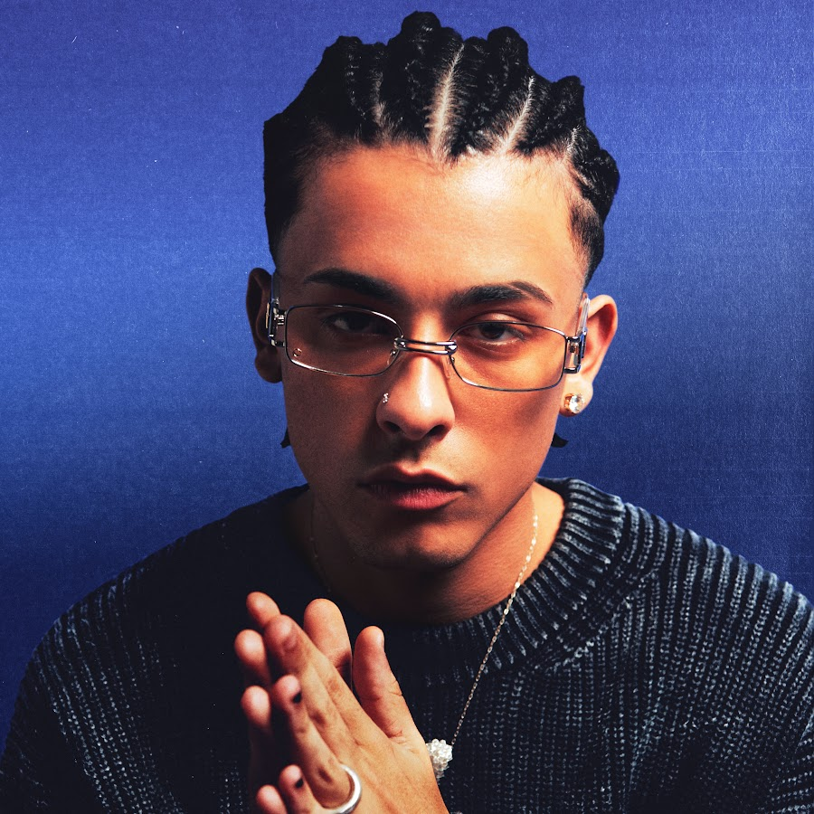

Trueno, cuyo nombre real es Mateo Palacios Corazzina, es uno de los raperos y traperos más destacados de Argentina y de toda la escena del hip-hop en español. Nació el 25 de marzo de 2002 en Buenos Aires, en una familia con gran influencia musical: su padre, Pedro Palacios, conocido como "MC Peligro," es un reconocido rapero y freestyler en Argentina. Trueno creció en el barrio de La Boca, un lugar con una fuerte identidad cultural y artística que influyó profundamente en su estilo y en sus letras.
